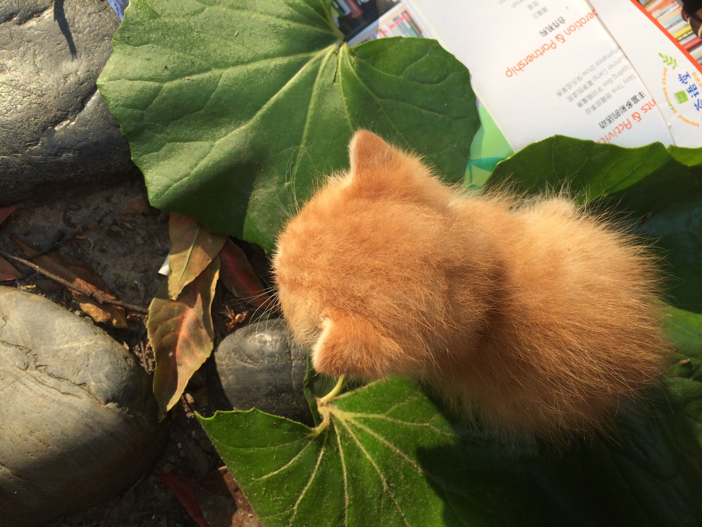

0. 前提条件
- 电脑安装git(Mac linux都需要安装)
- 安装go并设置环境变量(仅linux下需要)
- 虚拟机Centos7.6.1810(测试用, 不需要安装)
1. 安装hugo
mac直接使用brew install hugo就可以了
linux下源码安装
下载并编译
mkdir ~/src cd ~/src git clone https://github.com/gohugoio/hugo.git cd hugo go install添加环境变量
# 当前用户~/go文件绝对路径是GOPATH,Go编译后的文件在~/go/bin中 # 如现在当前用户是jenkins vim /etc/profile 添加 export export GOPATH=/var/lib/jenkins/go export PATH=${PATH}:$GOPATH/bin
重新生效/etc/profile文件
source /etc/profile
再次hugo vimersion
就会显示hugo版本, 表示可用
2. 使用Hugo创建个人网站
创建静态网站文件夹
cd ~ hugo new site actiger写第一篇markdown文章, markdown语法参考
cd ~/actiger 在目录~/actiger下执行hugo new about.md
在这里会在~/actiger/content下创建一个文件about.md
ls ~/actiger/content # 可以查看到
添加内容”我写的第1篇文章”
更改draft: true 为 draft:false
Centos7.6.1810需要添加防火墙端口(仅虚拟机需要增加防火墙端口)
firewall-cmd --add-port=1313/tcp --permanent firewall-cmd --reload使用主题生成本地服务, 查看博客效果, 更多主题下载hugo themes官网
cd ~/actiger/themes git clone https://github.com/nanxiaobei/hugo-paper.git cd ~/actiger # --bind="10.211.55.9"绑定ip , 使用本机则不需要绑定. hugo server --theme=hugo-paper --bind="10.211.55.9即是你的ip(不指定则默认只能本地访问)" --baseUrl="http://10.211.55.9/" --port=1313
浏览器输入http://你的ip:1313.如未指定,则是http://localhost:1313
即可查看静态博客
3. 创建GitHub项目
- 在GitHub中创建actiger的public公共类型(私人需要付费)项目, 创建完后https://github.com/Charles-one/actiger
4. 生成本地静态网站
cd ~/actiger
生成静态网页
注意baseUrl后的地址是HTTPS的类型, githup pages强制https类型
baseUrl的结束有/
actiger注意大小写
hugo --theme=hugo-paper --baseUrl="https://charles-one.github.io/actiger/"
这里会生成public文件夹
cd ~/actiger/public
git init
git remote add github git@github.com:Charles-one/actiger.git
git config user.email "你的邮箱"
git config user.name "你的名字"
git add .
git commit -m "init"
git push -u github master:master
5. Github中选择GitHub Pages的分支
进入,以我的项目setting设置里 https://github.com/Charles-one/actiger/settings
设置->Github Pages
选择Source为master即可
6. 查看GitHub Pages
刷新进入https://github.com/Charles-one/actiger/settings
设置->Github Pages下, 看到你的网站地址是 https://charles-one.github.io/actiger/
哈哈, 可以自由的写博客了
7. 补充下如何添加图片.(Mac压缩图片工具ImageOptim)
# 将自己的图片存放到如下位置
~/actiger/static/img/cat.JPG
# 执行hugo --theme=hugo-paper --baseUrl="https://charles-one.github.io/actiger/"
# 会把cat.JPG存放到, ~/actiger/public/img/cat.JPG
# 文章的存放的位置 ~/actiger/public/about/index.html
# 使用相对路径添加图片, 以about文章存放位置index.html为参考系.
# 在Markdown中添加
# 将下面内容写入about.md中

# 本文的路径是 actiger/public/linux/使用hugo和github-pages搭建静态网站/index.html
# 所以添加图片的相对路径是

